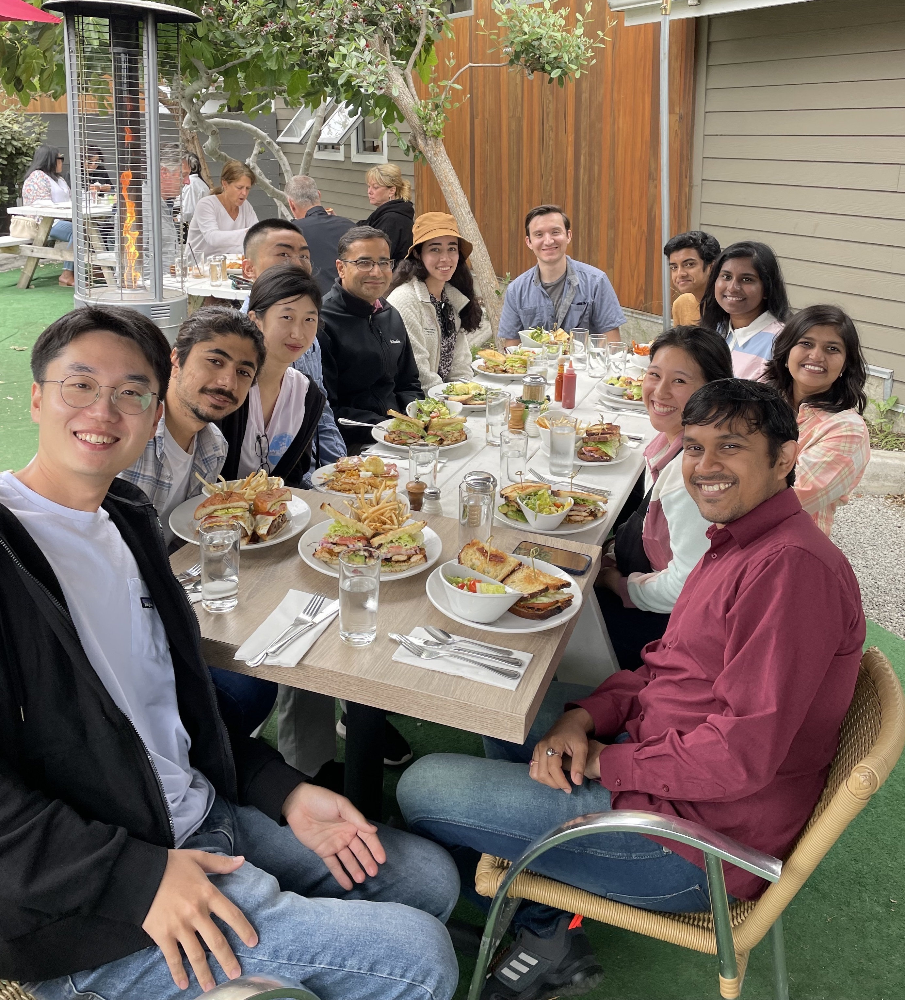

UC San Diego Bafna Lab
We are an Applied Computer Science lab at UC San Diego, advancing research in Extra-Chromosomal DNA amplified cancer through innovative computational approaches.
Recent Publications
13. AmpliconSuite: Analyzing focal amplifications in cancer genomes
J Luebeck, E Huang, B Dameracharla, F Kim, T Liefeld, R Ahuja, ...
Cancer Genetics, 2024
Transcriptional immune suppression and up-regulation of double-stranded ...
MS Lin, SY Jo, J Luebeck, HY Chang, S Wu, PS Mischel, V Bafna
eLife, 2024
CoRAL accurately resolves extrachromosomal DNA genome structures with lo...
K Zhu, MG Jones, J Luebeck, X Bu, H Yi, KL Hung, ITL Wong, S Zhang, ...
International Conference on Research in Computational Molecular Biology, 2024
AmpliconSuite: an end-to-end workflow for analyzing focal amplifications...
J Luebeck, E Huang, F Kim, T Liefeld, B Dameracharla, R Ahuja, ...
bioRxiv, 2024